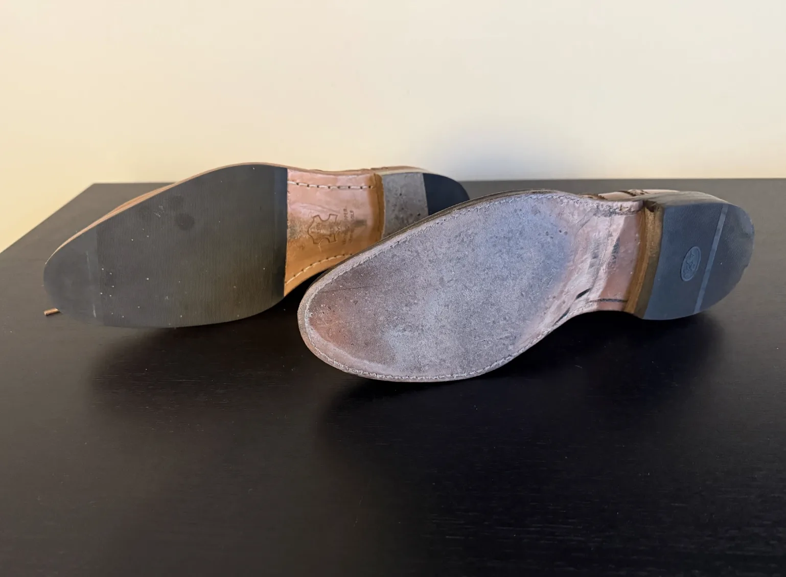

Comfort, construction, and what really matters in dress shoes

Whenever I visit Ray’s Shoe Repair in Kaysville, I want to chat with the cobbler about nice dress shoes. Every time he always tells me the same thing: “stop reading the internet.”
I always find that funny, there must be some things I’m saying that are a giveaway that I haven’t spent my whole life working on leather shoes. Still, the internet is actually a great place to learn about dress shoes and the only resource for many of us. Sites like Bespoke Unit and others helped me understand what makes a good dress shoe, especially when I first decided I wanted to upgrade what I was wearing.
Up until about 2017, I was buying my dress shoes at Ross. They worked, but I didn’t think about leather, construction, or longevity. At some point, I decided I wanted nicer shoes, and once you start down that road, you quickly learn that most quality dress shoes are made in one of two ways: stitched or welted (often called Blake-Stitched or Goodyear-Welted).
With stitched shoes, the insole is sewn directly to the outsole.
With welted shoes, there is an extra layer called a welt, often with cork inside, that makes the shoe sturdier, heavier, and less flexible. Because it is more technical to make, welted shoes are usually more expensive and are often seen online as the “better” option. Brands like Allen Edmonds are known for this construction.
When I really got into learning about dress shoes around 2018, I followed that advice. If welted was considered the higher-quality choice, then that’s what I wanted.
So I built a small collection of 3-4 pairs of welted shoes, mostly Allen Edmonds. For years, that’s almost all I wore and I love those shoes.
My most recent pair of shoes are custom shoes from a factory that I’m testing. They told me they were welted, but when they arrived, they were actually stitched. At first, I thought it was a mistake. But after wearing them, I realized I was glad it happened.

The leather wasn’t quite as nice as some of my other shoes, but the soles were much more flexible. They felt lighter. They were more comfortable, especially on long days with lots of walking. I found myself enjoying them more than my welted dress shoes.
I’ve had them for more than six months now and have worn them a lot. So far, they’ve held up really well. Time will tell how they compare to my older shoes that may last 20 years or more, but right now, they’re performing better than I expected.
One thing I especially like about these stitched shoes is the rubber outsole layered over the leather. It makes them more practical. I can wear them when the ground is wet and not worry as much. They hold up better for everyday use, which means I end up reaching for them more often.
From a value standpoint, stitched and welted shoes are also closer than people think. Both can be resoled. Both can last a long time if cared for. Economically, they are more similar than I once believed.
When I first started learning about dress shoes, everything pointed me toward welted construction. And for six or seven years, that’s what I wore almost exclusively. But after spending real time with stitched shoes, I’ve changed my mind. Stitched shoes are more comfortable and still have all the advantages of nice leather shoes.
Going forward, most of the dress shoes I buy will probably be stitched. Not because welted shoes are bad, but because stitched shoes fit my life better right now. They are more flexible. They are more comfortable. They are easier to wear day after day. And they’re normally a bit less expensive!
You can read every guide online and follow every recommendation, but after years of wearing different shoes, you start to learn what actually works for you. For me, comfort has become just as important as construction. Sometimes, the shoe that is “better” on paper is not the one you enjoy wearing the most.